11/21、カードボックス福山店のニュータイプチャレンジ 2026 MISSION5（11月開催）で5位に入った赤/白デッキです。50枚のうち〔ファントムペイン〕のカードを37枚入れ、白はストライクガンダムとキラ・ヤマトで組んでいます。赤/白の入賞デッキでの採用率が10%未満のカードは14種です。
デッキリスト
大会ページ: カードボックス福山店 11/21。
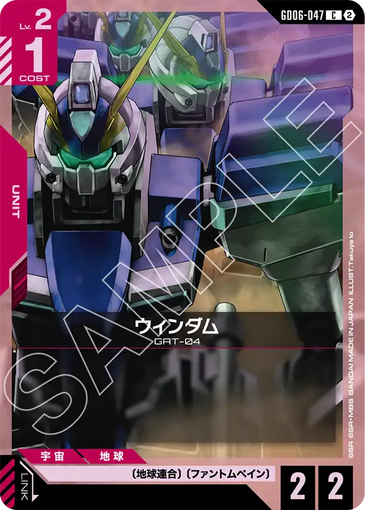
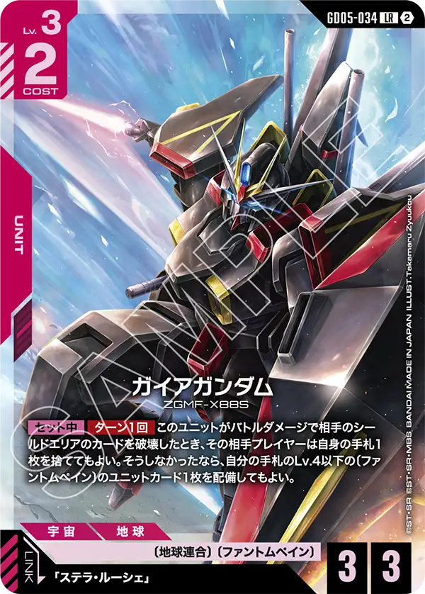
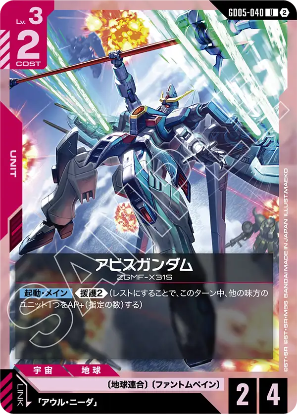
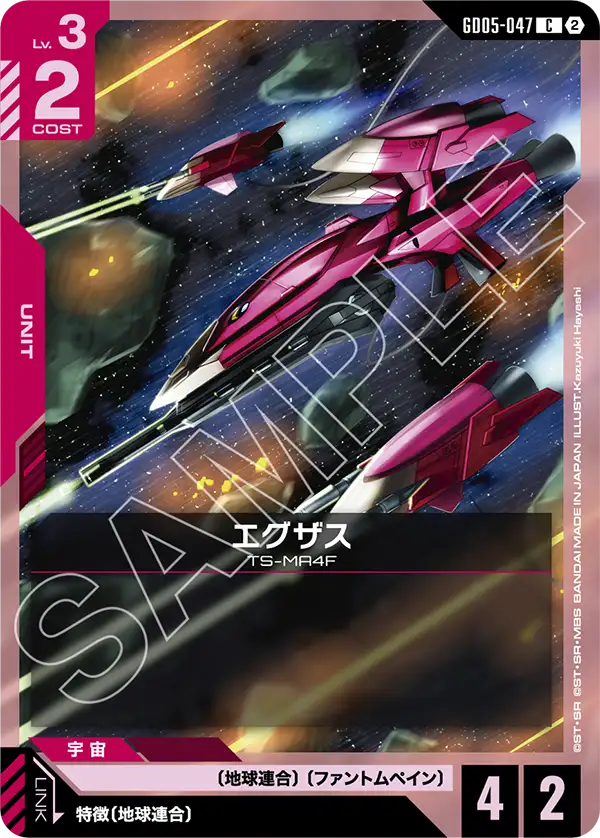
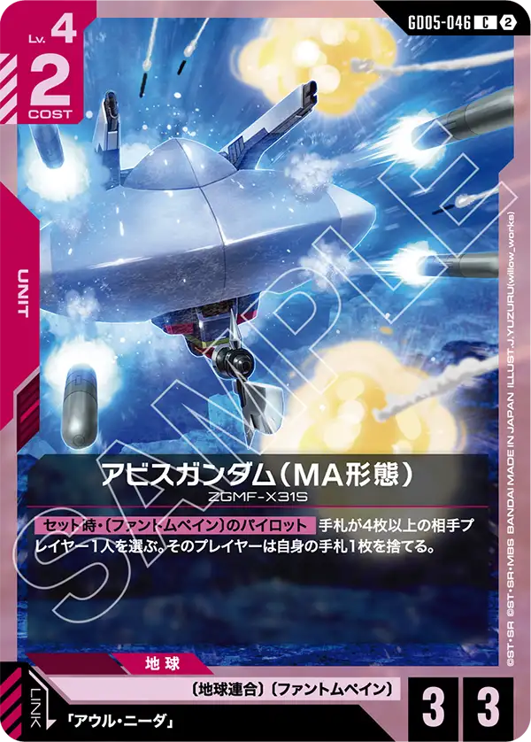
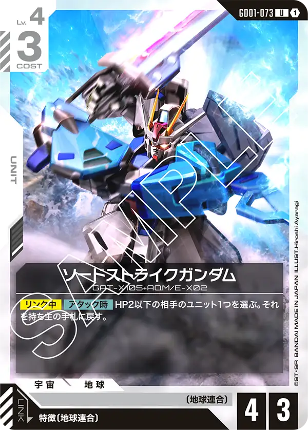
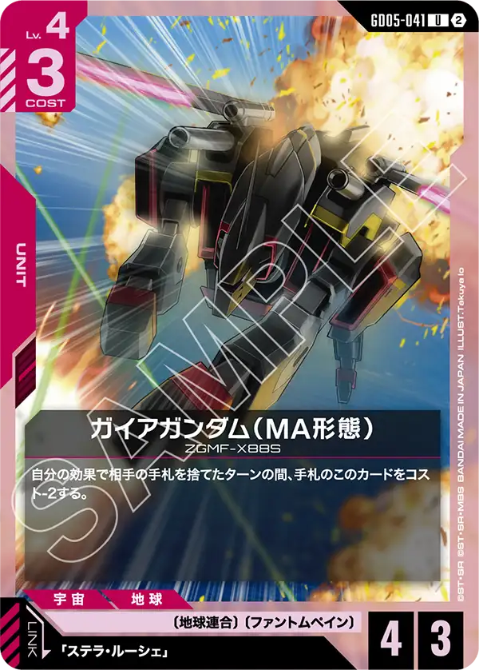
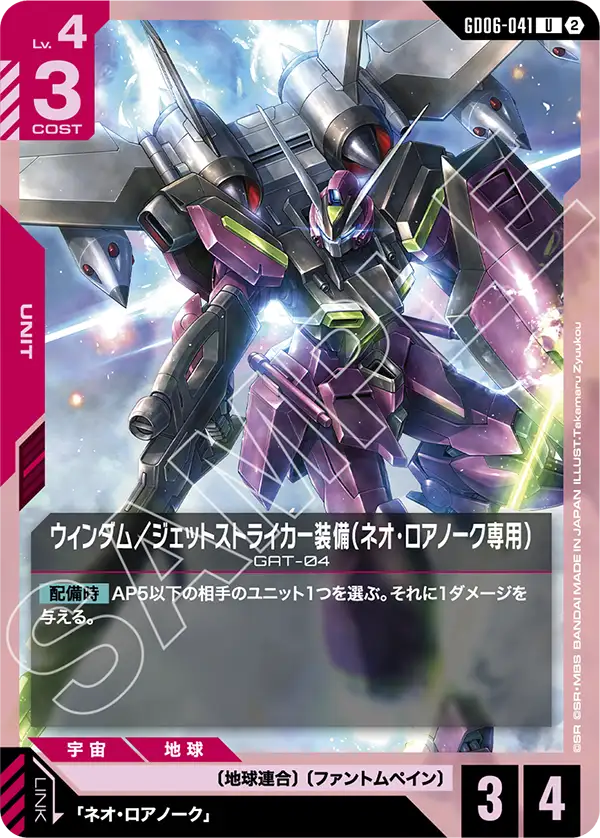

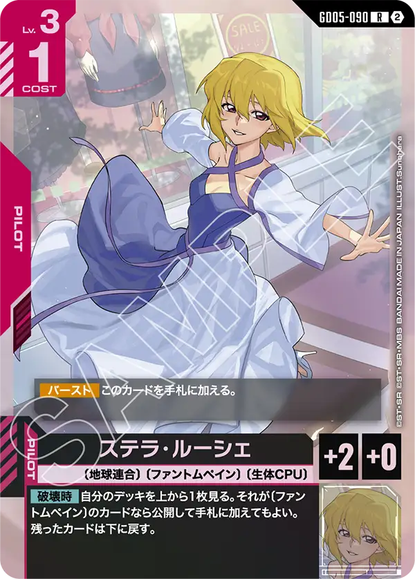
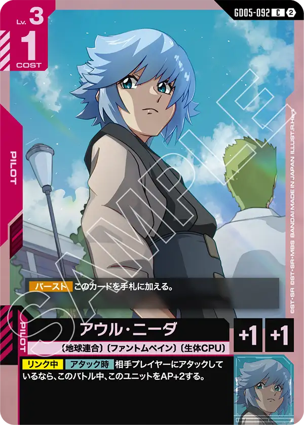
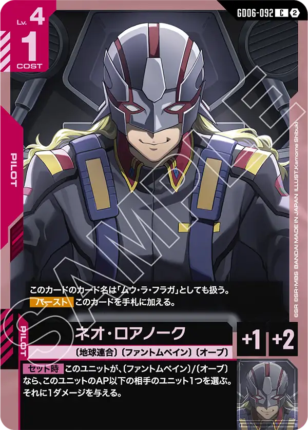


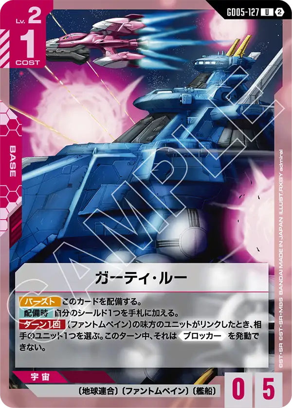
| カード | 種類 | 色 | Lv | コスト | AP/HP | 枚数 | 赤/白での採用率 |
|---|---|---|---|---|---|---|---|
| GD06-047 ウィンダム 珍 | ユニット | 赤 | 2 | 1 | 2/2 | 4 | 0.2% (1) |
| GD05-034 ガイアガンダム 珍 | ユニット | 赤 | 3 | 2 | 3/3 | 4 | 0.2% (1) |
| GD05-040 アビスガンダム 珍 | ユニット | 赤 | 3 | 2 | 2/4 | 3 | 0.2% (1) |
| GD05-047 エグザス 珍 | ユニット | 赤 | 3 | 2 | 4/2 | 4 | 0.2% (1) |
| GD05-046 アビスガンダム（MA形態） 珍 | ユニット | 赤 | 4 | 2 | 3/3 | 4 | 0.2% (1) |
| GD01-073 ソードストライクガンダム 珍 | ユニット | 白 | 4 | 3 | 4/3 | 2 | 2.1% (9) |
| GD05-041 ガイアガンダム（MA形態） 珍 | ユニット | 赤 | 4 | 3 | 4/3 | 3 | 0.2% (1) |
| GD06-041 ウィンダム／ジェットストライカー装備（ネオ・ロアノーク専用） 珍 | ユニット | 赤 | 4 | 3 | 3/4 | 4 | 0.7% (3) |
| ST04-001 エールストライクガンダム | ユニット | 白 | 5 | 4 | 4/4 | 3 | 11.4% (50) |
| GD05-090 ステラ・ルーシェ 珍 | パイロット | 赤 | 3 | 1 | — | 4 | 0.2% (1) |
| GD05-092 アウル・ニーダ 珍 | パイロット | 赤 | 3 | 1 | — | 2 | 0.2% (1) |
| GD06-092 ネオ・ロアノーク 珍 | パイロット | 赤 | 4 | 1 | — | 4 | 0.5% (2) |
| ST04-010 キラ・ヤマト 珍 | パイロット | 白 | 4 | 1 | — | 4 | 9.8% (43) |
| GD06-110 家族愛 珍 | コマンド | 赤 | 2 | 1 | — | 4 | 1.6% (7) |
| GD05-127 ガーティ・ルー 珍 | ベース | 赤 | 2 | 1 | —/5 | 1 | 0.2% (1) |
ユニット31枚・パイロット14枚・コマンド4枚・ベース1枚。このうちGD06のカードは4種16枚です。
構成の見どころ
GD05から登場した〔ファントムペイン〕がGD06での強化を受けて入賞を果たした。
手札を捨てることができるハンデス効果が〔ファントムペイン〕の一部にありそれを有効に使ったデッキと言えよう。
SEED作品と言うこともあり、〔地球連合〕ともある一定のシナジーがあり、今回は白のソードストライクガンダム[GD01-073]もリンク対象にしやすいという点もあり今回の構築になったと思われる。
ただ、白のカードはソードストライクガンダム[GD01-073]の他にエールストライクガンダム[ST04-001]とキラ・ヤマト[ST04-010]と言う強力なエールキラのリンクセット程度しか入っていないところを見ると〔ファントムペイン〕で戦いたいと言う意思を感じる構築にもなっている。
ベースが1枚と言うことで完全に攻撃に振っており、唯一入っているガーティ・ルー[GD05-127]もブロッカー効果を無効化する効果になっているので最後の詰めに使うことを想定しているのだろう。
入っている各ユニットとしては、
ガイアガンダム[GD05-034]やアビスガンダム（MA形態）[GD05-046]で相手の手札を捨てることで相手の行動を制限しつつ、ステラ・ルーシェ[GD05-090]を使うことで自分はリソースを減らさずに戦う形を主軸にしつつ、
禁止カードとなったアンクシャ[GD01-020]と似た効果を持つウィンダム／ジェットストライカー装備（ネオ・ロアノーク専用）[GD06-041]やネオ・ロアノーク[GD06-092]でダメージも散らす事ができる点も魅力的である。

全体的にAPが低めと感じるかもしれないがアウル・ニーダ[GD05-092]や家族愛[GD06-110]があるためHP6ベースにも最小限の攻撃で破壊でき、手札を序盤たくさん使っても家族愛[GD06-110]の効果でドローもしつつ、APを上げて相手ユニットやベースを攻撃できる。
〔ファントムペイン〕は何かに特化している形では無いが、上記の通り様々な事ができるカード群になっているので今後他のカードたちを組み合わせて特化できる可能性はある。
運営のひとこと
大型の〔ファントムペイン〕は少し物足りない状態なので他で補完する形を取るのでは無く、序中盤に振り切る形にして押し切る形をとったことはデッキの作り方としてとても参考になる。
初期からベースを4～5枚にする構築が基本ベースになっていたが、最近ベース0や1の構築もちらほら見かけるようになった。
構築の考え方も今後変わって行く可能性を感じた。
ちなみに〔ファントムペイン〕は赤が中心だが、唯一アビスガンダム[ST11-010]が紫を持っている。
今後の弾で紫の〔ファントムペイン〕が登場する可能性もあるのでそこも注目していきたい。
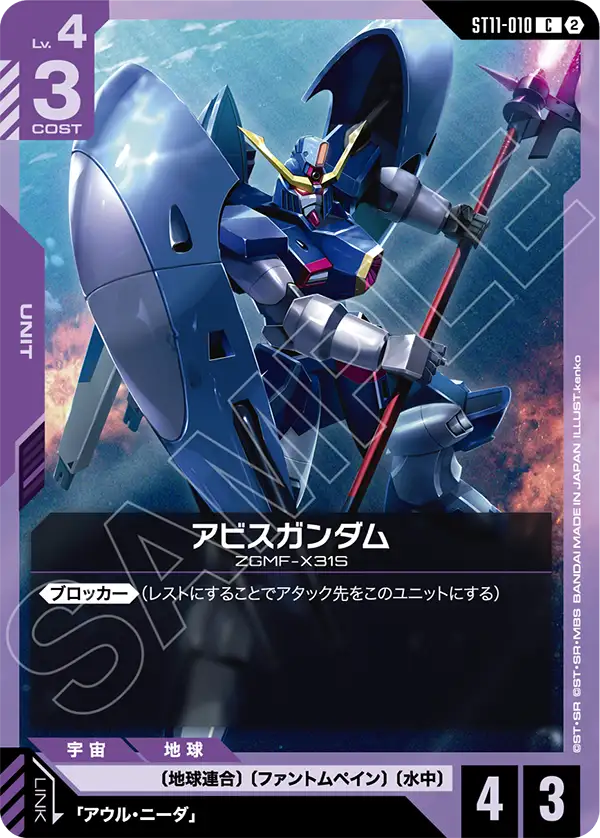
数え方
採用率は、GD06が大会で使えるようになった11/7から11/22までのニュータイプチャレンジ 2026 MISSION5（11月開催）の入賞デッキのうち、デッキカラーが赤/白の438本を母数にしています。「珍」は赤/白での採用率が10%未満のカードです。デッキリストが公開されていない入賞デッキは数に入れていません。数字は公式の大会結果から自動で集めた集計です。誤りに気づいたらXアカウント（@gcg_stats）のDMで教えてください。